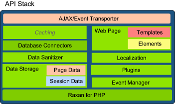

Raxan is a framework that is designed to accelerate PHP/Ajax web development by making it easier for developers to build and deploy rich web applications.

Over the years programmers having relied on open source technology to help them build and deliver quality solutions for their customers. Today, developers have the choice to choose a technology that best suit their needs. This is all made possible because others have so generously contributed to the open source community.
Raxan provides developers with yet another choice. It provides a set of integrated technology that's open source and readily available for both personal and commercial use.
Raxan is designed in such a way that it can either be used independent of or integrated with existing frameworks so that you can make the best use of your existing technology and investments. With Raxan, we are simply adding another player to the framework space which will lead to more choice and flexibility for developers.
The technology used behind Raxan is licensed under the open sourced MIT and GPL licenses and is based on today's web standards. This means that you have the option to modify or change the behavior of Raxan to suit your own needs.
By using a set of design patterns we were able to build a framework that's modular, extensible and easy to use. This modular structure provides developers with a consistent interface for building and distributing reusable components.
Raxan makes it easier for developers to understand and follow their web page or application development. We believe it can significantly shorten your development time and we invite you to find out for yourself.
With Raxan developers can:
The framework designed to meet the needs of the PHP/Ajax developer. The underlining technology enables web designers to create theme-able cross-browser web pages and templates, while providing the PHP/Ajax developer with a set of highly advanced and interactive APIs.
To learn more about Raxan you can continue reading this user guide or visit the main web site. For user support, we invite you to join the Raxan Community to post your questions and comments.
Your feedbacks, optimizations and contributions to the framework are very important to us and you're more than welcome to do so.
We also recommend that you check out the source code from our Google Code Repository and have a look at the source.
If you have any other questions, suggestions or contributions, please feel free to Contact us via Email
We all know that documentation requires time and commitment. While we are committed to improving the quality of documentation, we are also open to community feedback and assistance where necessary. So feel free to volunteer in any way to improve the quality of the documentation, so that others like you can start learning about the framework.
Join the Community - The forum works with Google Friend Connect - Log into our forum with your existing Google, Yahoo, AIM or OpenID account. No need to create a new account.
The Raxan Framework is free software and is available for use in both personal and/or commercial projects, under both the terms of the GNU General Public License (GPL) as published by the Free Software Foundation and the MIT License as published by the Open Source Initiative. The bundled jQuery libraries are also free software and are distributed under their respective licenses (GPL and MIT). Please visit the jQuery website for information regarding distribution and licenses.
The Raxan Framework is written by Raymond Irving and maintained here at http://raxanpdi.com. For additional credits/contributions/inspirations please visit the Credits/Acknowledgements web page.
Up Next: Main Features